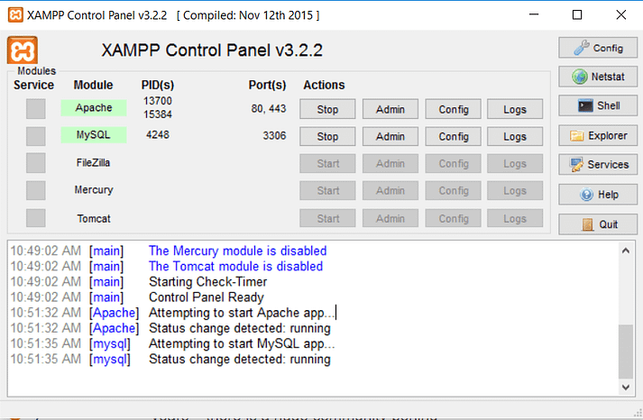

1. Wordpress là gì
-
WordPress là một nền tảng quản lý nội dung (CMS hay đầy đủ là Content Management System) miễn phí và mã nguồn mở, cho phép người dùng tạo và quản lý các trang web, blog, cửa hàng trực tuyến và nhiều loại website khác một cách dễ dàng và nhanh chóng. WordPress là một trong những CMS phổ biến nhất thế giới, được sử dụng bởi hơn 40% các website trên internet.
-
Phân biệt wordpress.com và wordpress.org
- WordPress.com là một dịch vụ lưu trữ website miễn phí hoặc có phí của công ty Automattic, sử dụng nền tảng WordPress
- WordPress.org là trang web cung cấp mã nguồn của WordPress để người dùng có thể tự tải về và cài đặt trên máy chủ riêng của họ hoặc của nhà cung cấp lưu trữ khác
-
Và với bài viết này sẽ sử dụng WordPress.org cài đặt trên server ảo XAMPP với mục đích học tập
2. Cài đặt wordpress.org trên máy chủ ảo XAMPP
-
XAMPP cung cấp một môi trường phát triển web trên máy tính cá nhân của bạn, cho phép bạn chạy các ứng dụng web trên môi trường local (máy chủ cục bộ) để phát triển và kiểm thử trước khi triển khai lên môi trường sản phẩm thực tế.
-
Bước 1: Truy cập trang web chính thức của XAMPP và chọn Download với phiên bản mới nhất là 8.2.12/PHP 8.2.12

-
Bước 2: Chạy file setup và ấn Next đến đoạn này thì chỉnh như ảnh

-
Bước 3: Đến đoạn này thì giữ nguyên và ấn Next để bắt đầu quá trình cài đặt

-
Bước 4: Sau khi quá trình cài đặt kết thúc hãy ấn Finish để khởi động bảng điều khiển của XAMPP

3. Khởi động hosting ảo
-
Sau khi bảng điểu khiển của XAMPP được khởi động thì bạn hãy ấn start 2 cái như hình là Apache và MySQL

-
Hiện như vậy là đã Oke
-

-
Truy cập
localhosthoặc127.0.0.1để kiểm tra -

4. Cài đặt Wordpress trên XAMPP
-
Bước 1: truy cập wordpress.org và ấn Download

-
Bước 2: tạo một thư mục mới trong
C:\xampp\htdocs. VD: ở đây mình tạo thư mục tên làwp
-
Bước 3: Giải nén và copy toàn bộ file đã tải lúc nãy vào trong thư mục đã tạo ở bước 2 (ở đây ví dụ là
wp)
-
Bước 4: Truy cập
localhost/phpmyadminđể tạo database cho wordpress
-
Đoạn này bạn sẽ tự đặt tên cho database và chọn
utf8mb4_unicode_ci. Ở đây mình đặt làwp
-
Bước 5: truy cập localhost/ten_thu_muc với ten_thu_muc la tên đã tạo ở bước 2, ở đây là
wpđể bắt đầu cài đặt Wordpress
-
Đoạn này sẽ bắt đầu cài đặt database cho wordpress

-
Ở mục này hãy điền các thông tin như sau và ấn submit:
Database Name: như đã tạo ở bước 4 (ở đây là wp)
Username: root
Password: bỏ trống
Database Host: Giữ nguyên
Table Prefix: Giữ nguyên

-
Ấn Run the installation để tiếp tục quá trình cài đặt

-
Bước 6: Điền page title, username và mật khẩu và ấn Install Wordpress. Username và Passowrd đặt tùy nhưng hãy nhớ để đăng nhập wordpress sau khi cài đặt xong

-
Đến đoạn này là đã xong bạn dùng tài khoản và mật khẩu vừa tạo ở trên để đăng nhập.

-
Đến đây là xong rồi. Chào mừng bạn đến với Wordpress!